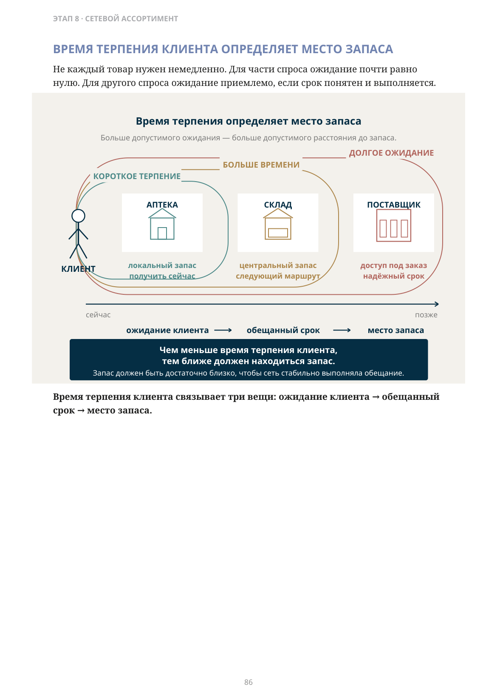
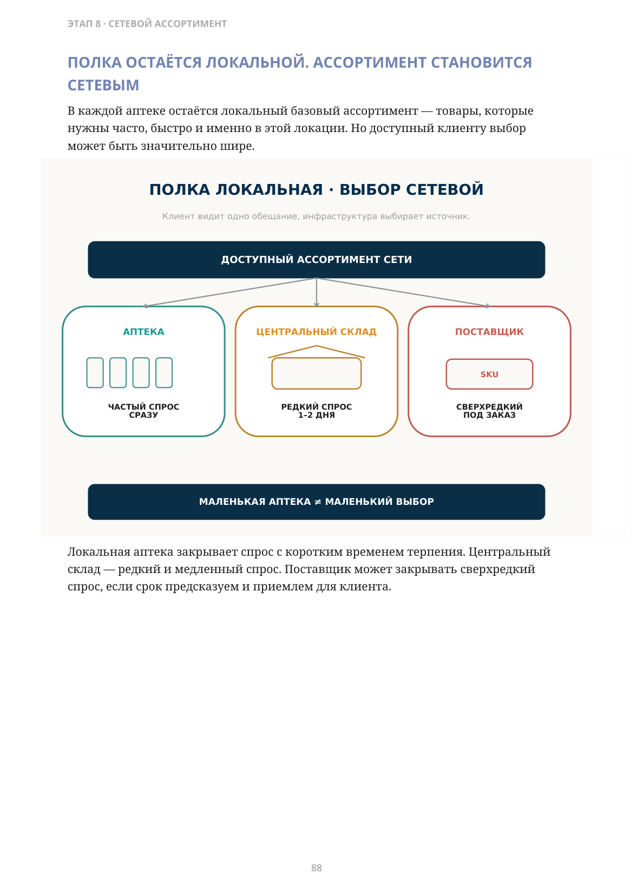
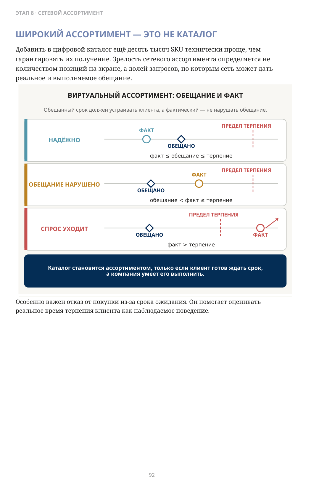
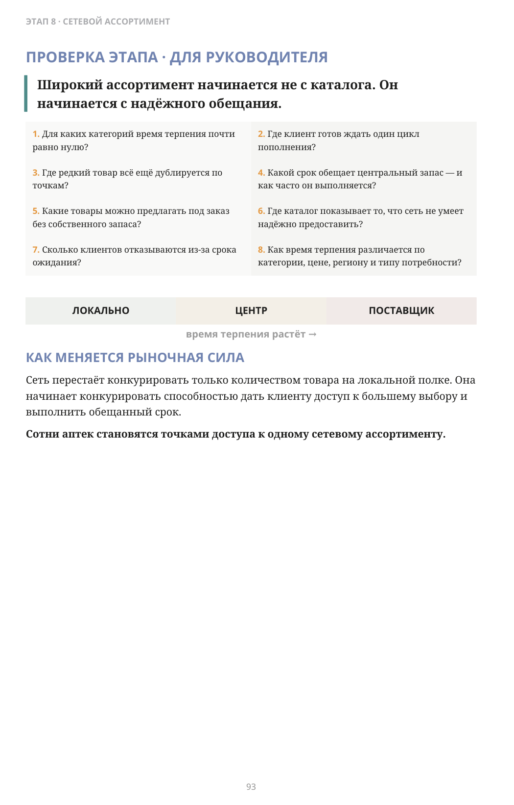

Должен ли весь ассортимент физически лежать в каждой аптеке?
ЧАСТЬ II · ЭТАП 8
Онлайн-заказ, центральный запас и сетевой ассортимент
После категорийного управления сеть уже понимает, какой выбор хочет дать клиенту.
Где физически должен лежать каждый товар, чтобы клиент всё ещё считал предложение сети удобным?
Ответ зависит не только от частоты продаж. Он зависит от времени.
ВРЕМЯ ТЕРПЕНИЯ КЛИЕНТА
Максимальный срок ожидания, при котором клиент всё ещё готов завершить покупку у этой сети.
Для одного типа спроса это несколько минут. Для другого — день. Для третьего — неделя или больше.
Именно поэтому широкий ассортимент не обязан полностью дублироваться в каждой аптеке.
Чем меньше время терпения клиента, тем ближе к нему должен находиться запас. Чем больше время терпения — тем выше по цепочке можно держать товар.
Не каждый товар нужен немедленно. Для части спроса ожидание почти равно нулю. Для другого спроса ожидание приемлемо, если срок понятен и выполняется.
сейчас → позже
ожидание клиента → обещанный срок → место запаса
Время терпения клиента связывает три вещи: ожидание клиента → обещанный срок → место запаса.

Точное представление формулы
КОРОТКОЕ ТЕРПЕНИЕ → АПТЕКА — локальный запас, получить сейчас.
Точное представление формулы
БОЛЬШЕ ВРЕМЕНИ → СКЛАД — центральный запас, следующий маршрут.
Точное представление формулы
ДОЛГОЕ ОЖИДАНИЕ → ПОСТАВЩИК — доступ под заказ, надёжный срок.
Описание схемы
FIG_041: ВРЕМЯ ТЕРПЕНИЯ КЛИЕНТА ОПРЕДЕЛЯЕТ МЕСТО ЗАПАСА
Чем больше время терпения клиента, тем дальше можно разместить запас: короткое ожидание — аптека, больше времени — центральный склад, долгое ожидание — поставщик под заказ. Связка схемы: ожидание клиента → обещанный срок → место запаса.
КЛИЕНТ НЕ ДОЛЖЕН ИСКАТЬ ЗАПАСЫ СЕТИ НОГАМИ
Когда человек приходит в аптеку и только у первого стола — у фармацевта — узнаёт, что товара нет, сеть уже опоздала. Клиент потратил время. Потом он идёт к конкуренту. Цифровой заказ меняет момент, когда клиент получает ответ. Он может заранее:
- найти товар;
- увидеть, где он доступен;
- зарезервировать;
- выбрать точку получения;
- прийти уже за подготовленным заказом.
Главная ценность здесь не обязательно доставка домой. На многих рынках дистанционная продажа отдельных лекарств регулируется по-разному.
товар уже доступен
товар будет доступен в обещанный срок
Даже модель «найти → заказать → получить в аптеке» переводит уровень наличия из внутреннего показателя в обещание клиенту.
ПОЛКА ОСТАЁТСЯ ЛОКАЛЬНОЙ. АССОРТИМЕНТ СТАНОВИТСЯ СЕТЕВЫМ
В каждой аптеке остаётся локальный базовый ассортимент — товары, которые нужны часто, быстро и именно в этой локации. Но доступный клиенту выбор может быть значительно шире.
ПОЛКА ЛОКАЛЬНАЯ · ВЫБОР СЕТЕВОЙ
Клиент видит одно обещание, инфраструктура выбирает источник.
ДОСТУПНЫЙ АССОРТИМЕНТ СЕТИ → АПТЕКА — ЧАСТЫЙ СПРОС, СРАЗУ
ДОСТУПНЫЙ АССОРТИМЕНТ СЕТИ → ЦЕНТРАЛЬНЫЙ СКЛАД — РЕДКИЙ СПРОС, 1–2 ДНЯ
ДОСТУПНЫЙ АССОРТИМЕНТ СЕТИ → ПОСТАВЩИК — SKU, СВЕРХРЕДКИЙ, ПОД ЗАКАЗ
МАЛЕНЬКАЯ АПТЕКА ≠ МАЛЕНЬКИЙ ВЫБОР
Локальная аптека закрывает спрос с коротким временем терпения. Центральный склад — редкий и медленный спрос. Поставщик может закрывать сверхредкий спрос, если срок предсказуем и приемлем для клиента.

Описание схемы
FIG_042: ПОЛКА ОСТАЁТСЯ ЛОКАЛЬНОЙ. АССОРТИМЕНТ СТАНОВИТСЯ СЕТЕВЫМ
Доступный ассортимент сети делится по частоте спроса и сроку: частый спрос хранится в аптеке и доступен сразу, редкий — на центральном складе с ожиданием 1–2 дня, сверхредкий — у поставщика под заказ. Маленькая аптека не обязана означать маленький выбор.
ЗАЧЕМ ДЕРЖАТЬ ОДИН РЕДКИЙ ТОВАР В СОТНЯХ АПТЕК?
Представим сеть из нескольких сотен аптек. Есть дорогая или редкая позиция, которая продаётся не каждый день.
Если держать по одной упаковке в каждой точке, сеть финансирует сотни локальных остатков ради небольшого числа реальных продаж.
редкий товар дублируется по сети
редкий спрос собирается в одном месте
Центральный склад меняет экономику. Товар находится там, где спрос агрегируется. Клиент оформляет заказ, выбирает аптеку получения, а сеть доставляет товар по существующему маршруту.
Если фактическое время доставки меньше времени терпения клиента, локальное дублирование запаса становится необязательным.
- клиент получает более широкий реальный выбор;
- сеть не умножает редкий запас на количество аптек.
Централизация редкого ассортимента расширяет выбор без пропорционального роста запаса.
ЧТО МЕНЯЕТСЯ В РЕГИОНАХ?
Небольшая аптека физически ограничена. Но её доступный ассортимент не обязан быть таким же маленьким.
Если точка связана с центральным складом, цифровым заказом и регулярным маршрутом, клиент получает доступ к товарам, которые экономически неразумно держать локально.
Это особенно важно там, где поездка в крупный город сама по себе становится частью стоимости покупки.
ОГРАНИЧЕНИЯ НУЖНО ПРОВЕРЯТЬ ОТДЕЛЬНО
- вид товара;
- рецептурный статус;
- температурный режим;
- законодательство;
- доступная логистика.
Сильная сеть переносит ассортиментное преимущество центральной инфраструктуры в каждую локальную точку.
А ЕСЛИ ТОВАРА НЕТ ДАЖЕ НА ЦЕНТРАЛЬНОМ СКЛАДЕ?
Иногда лучший способ управлять сверхредким товаром — не держать его в собственном запасе. Но только при одном условии:
Сеть должна уметь надёжно обещать срок.
Для этого нужно знать, кто поставит товар, за сколько времени, с какой вероятностью срок будет выполнен и какие ограничения действуют.
Тогда клиент видит не просто «нет в наличии», а: «Доступно под заказ. Ожидаемый срок получения — такой-то».
Физически товар сегодня может принадлежать поставщику. Но сеть обладает другой способностью — надёжно организовать доступ.
Ассортимент определяется не только тем, что лежит на складе. Он определяется тем, что сеть способна надёжно предоставить клиенту в обещанный срок.
ТРИ УРОВНЯ ДОСТУПНОСТИ
| ЛОКАЛЬНО | сразу | очень короткое терпение |
|---|---|---|
| ЦЕНТРАЛЬНЫЙ ЗАПАС | следующий маршрут | клиент готов ждать пополнение |
| ПОД ЗАКАЗ | известный более длинный срок | сверхредкий спрос |
Главная формула: обещанный срок должен укладываться во время терпения клиента — и сеть должна уметь этот срок выполнять.
ШИРОКИЙ АССОРТИМЕНТ — ЭТО НЕ КАТАЛОГ
Добавить в цифровой каталог ещё десять тысяч SKU технически проще, чем гарантировать их получение. Зрелость сетевого ассортимента определяется не количеством позиций на экране, а долей запросов, по которым сеть может дать реальное и выполняемое обещание.
Особенно важен отказ от покупки из-за срока ожидания. Он помогает оценивать реальное время терпения клиента как наблюдаемое поведение.

Описание схемы
FIG_044: ШИРОКИЙ АССОРТИМЕНТ — ЭТО НЕ КАТАЛОГ
Инфографика «ШИРОКИЙ АССОРТИМЕНТ — ЭТО НЕ КАТАЛОГ». Сопровождающий текст раздела поясняет её смысл: ШИРОКИЙ АССОРТИМЕНТ — ЭТО НЕ КАТАЛОГ Добавить в цифровой каталог ещё десять тысяч SKU технически проще, чем гарантировать их получение. Зрелость сетевого ассортимента определяется не количеством позиций на экране, а долей запросов, по которым сеть может дать реальное и выполняемое обещание. Особенно важен отказ от покупки из-за срока ожидания. Он помогает оценивать реальное время терпения клиента как наблюдаемое поведение.
Широкий ассортимент начинается не с каталога. Он начинается с надёжного обещания.
время терпения растёт →
КАК МЕНЯЕТСЯ РЫНОЧНАЯ СИЛА
Сеть перестаёт конкурировать только количеством товара на локальной полке. Она начинает конкурировать способностью дать клиенту доступ к большему выбору и выполнить обещанный срок.
Сотни аптек становятся точками доступа к одному сетевому ассортименту.

Описание схемы
FIG_045: Вопросы для проектирования широкого ассортимента
Инфографика «Вопросы для проектирования широкого ассортимента». Сопровождающий текст раздела поясняет её смысл: КАК МЕНЯЕТСЯ РЫНОЧНАЯ СИЛА Сеть перестаёт конкурировать только количеством товара на локальной полке. Она начинает конкурировать способностью дать клиенту доступ к большему выбору и выполнить обещанный срок. Сотни аптек становятся точками доступа к одному сетевому ассортименту.
ЧТО ДАЛЬШЕ?
Если одно и то же обещание по ассортименту и сроку уже можно надёжно повторять через множество точек, возникает следующий вопрос:
Можно ли таким же образом масштабировать всю операционную модель сети?
На этом этапе сеть уже умеет не только управлять запасом конкретной аптеки, но и распределять клиентское обещание между локальной полкой, центральным запасом и надёжным заказом.
Следующий шаг — понять, можно ли повторять саму операционную модель с той же дисциплиной при расширении сети.